Channels - Urban Channel
Contents
Channels - Urban Channel#
Overview
Complete QGIS Lesson 1 before starting this lesson. Use this training module to build an urban drainage channel by digitizing the channel components. Finish it up by adding culverts to the channel, boundary conditions. The final part of the module is to review the channel results.
This module replaces Lesson 2. Lesson 2 uses a RAS import and this one uses QGIS to build the channel from scratch.
Required Data
The lesson makes use of the original data from Lesson 1, left bank, right bank, and cross section data, and culvert rating tables.
Start from the end of Lesson 1. All data is provided in the Lesson folders.
File |
Content |
Location |
QGIS Lesson 1.gpkg |
FLO-2D GeoPackage |
\QGIS Lesson 1 |
QGIS Lesson 1.qgz |
QGIS file |
\QGIS Lesson 1 |
Grnway Inflow 24 hr100yr.txt |
Inflow hydrograph |
\QGIS Lesson 2 |
*.txt |
Culvert rating tables |
\QGIS Lesson 2\Hydraulic Structures |
*.shp |
Channel shapefiles |
\QGIS Lesson 2\Mixed Channel Layers |
Project Location C:\Users\Public\Documents\FLO-2D PRO Documentation\Example Projects\QGIS Tutorials
This video will get through Step 9. The second video is linked to Step 10.
Step 1: Open Lesson 1 Part 3 in QGIS#
Search the start menu and run the “QGIS Desktop” program.

Open QGIS and drag Lesson 1.qgz onto the canvas the file in QGIS and Load the Project into the FLO-2D Plugin.

C:\Users\Public\Documents\FLO-2D PRO Documentation\Example Projects\QGIS Tutorials\QGIS Lesson 1\QGIS Lesson 1.qgz
Click Yes to load the model.
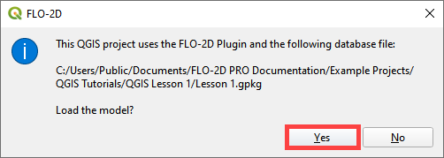
If necessary, use Quick Map Services to load an aerial image onto the map. See Lesson 1 - Part 2 - Step 3 for instructions.
If necessary, import and check visible box of the Elevation Raster from Lesson 1. This layer should be right above the Google Hybrid layer. It may be necessary to move it from another location in the Layers List.
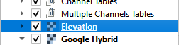
Double click the Elevation raster layer and click Symbology.
Set the Hillshade parameters as shown in the following image.
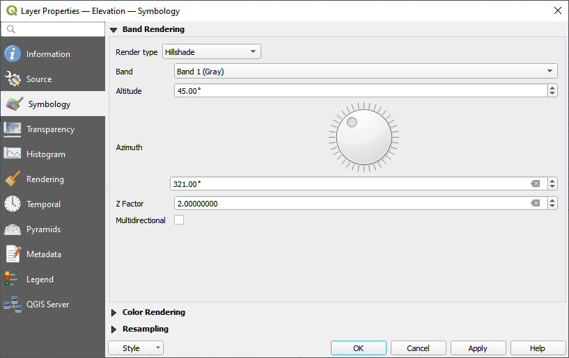
Step 2: Digitize the left banks#
Note
Digitize the lines from upstream to downstream.
Zoom in on the upstream channel segment in the southeast corner of the map.
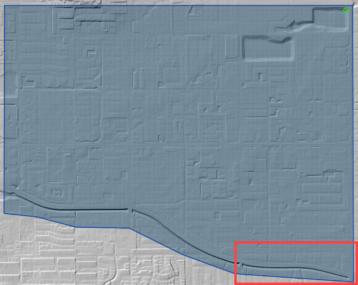
In the User Layers Group, click the Left Banks Lines to activate the layer.
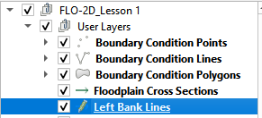
Click the Editor pencil to turn on edits for this layer and click the Add Line Feature to add a left bank line.
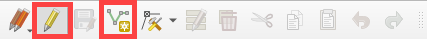
Note
Cool digitizing features:
Use the scroll wheel to zoom in and out.
Click the scroll wheel to pan while in editing mode.
Use the delete key to delete the last point clicked.
Esc key will cancel polyline.
The point won’t drop until the mouse button is released.
Redo and undo have limited functionality and can be useful.
Start at the beginning of the channel on the left bank looking downstream. Click the left mouse button to create a line that runs along the left bank. Click the right mouse button to close the polyline and fill the attributes.
The channel runs from east to west so the left bank looking downstream is on the south side.

Repeat this process for the next two segments. The final left banks should look something like the following image.
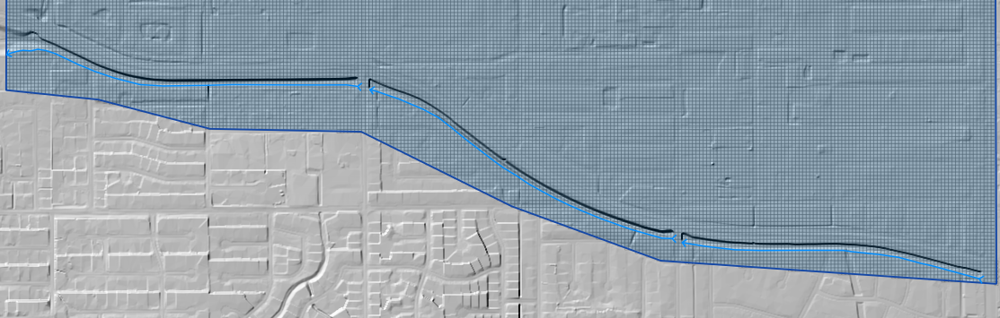
Click the Save Icon to save the features and turn the editing pencil off.
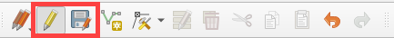
Step 3: Digitize the right banks#
Zoom in on the upstream channel segment in the southeast corner of the map.
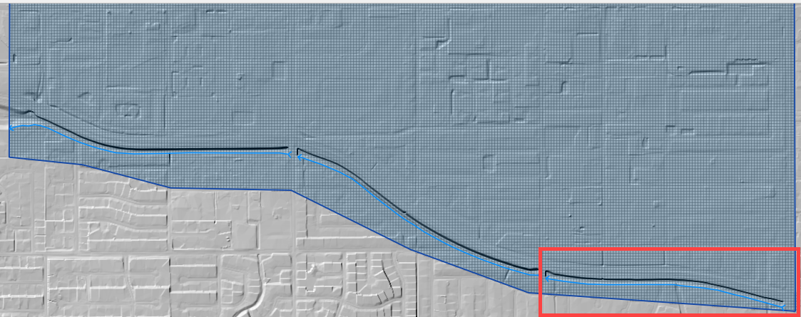
In the User Layers Group, click the Right Bank Lines to activate the layer.
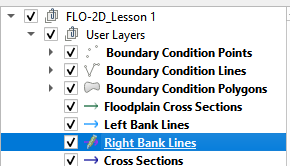
Click the Editor pencil to turn on edits for this layer and click the Add Line Feature to add a right bank line.
Start at the beginning of the channel on the right bank looking downstream. Click the left mouse button to create a line that runs along the right bank. Click the right mouse button to close the polyline and fill the attributes.
The channel runs from east to west so the right bank looking downstream is on the north side.

Repeat this process for the next two segments. The final left banks should look something like the following image.
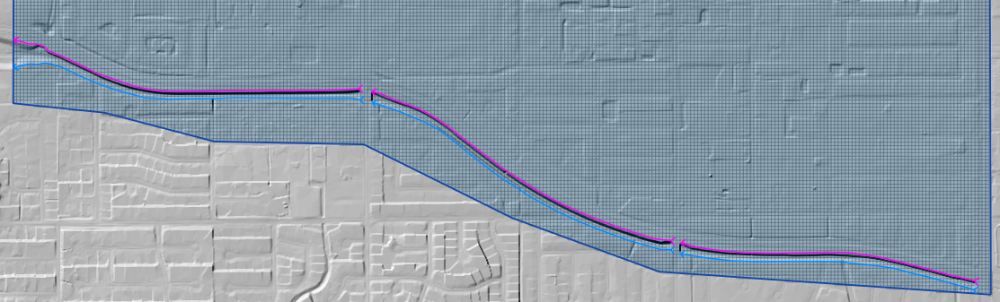
Click the Save Icon to save the features and turn the editing pencil off.
Step 4: Digitize the cross sections#
Note
Try to digitize the cross sections in order from upstream to downstream.
Zoom in on the upstream channel segment in the southeast corner of the map.
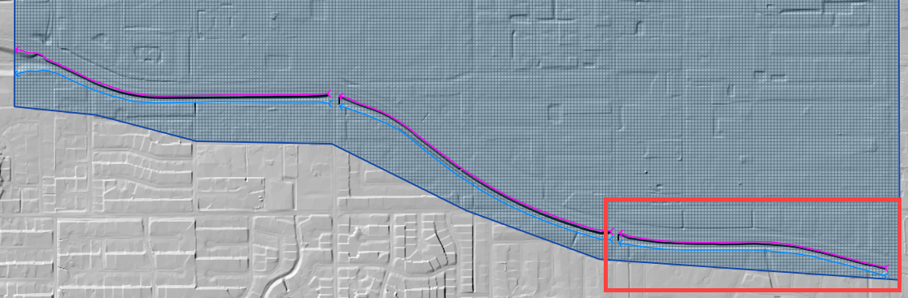
In the User Layers Group, click Cross Sections to activate the layer.
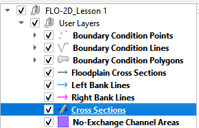
Click the Editor pencil to turn on edits for this layer and click the Add Line Feature to add a right bank line.
Note
The first cross section of a channel segment has important restrictions.
The line must cross the left and right bank line.
The line must start in the same cell as the left and right bank line.
Digitize the first cross section.
Click the left side first and then the right side.
Right click to close the line.
Use the enter key to close the dialog box. It isn’t necessary to fill the data at this time.
Note
Want to restart the gif? Right click and open it in a new tab.
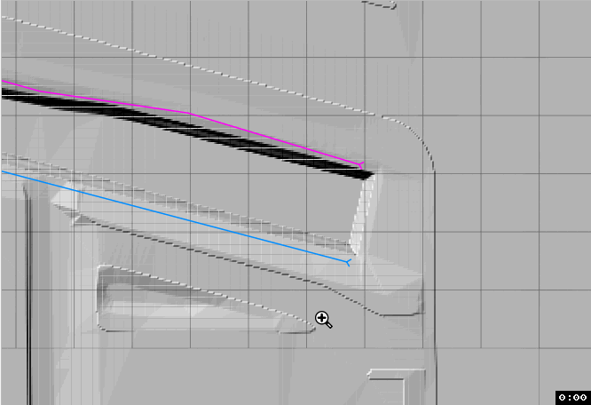
The remaining cross sections are not restricted. The should cross both lines and be somewhat perpendicular to flow. Since this is a uniform system, it is not necessary to use more than a cross section every 20 or 30 cells. Use more cross sections in transitional areas and leading up to box culvert transitions.
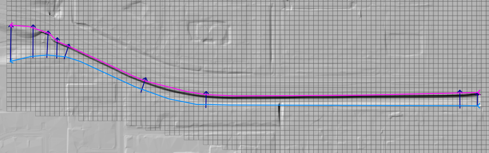
The final cross sections should look like something like this:
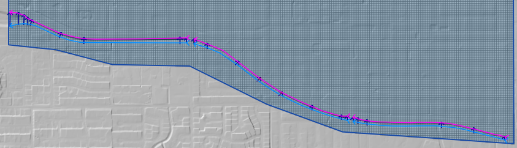
Step 5: Complete cross section attributes#
Note
Want to try this lesson with a trapezoidal channel? Go to Step 5T below.
Right click the Cross Sections layer in the User Layers Group and click Open Attribute Table.
Click the Edit pencil.
Set the field to fcn and click Update All.
Set the n value to 0.035.
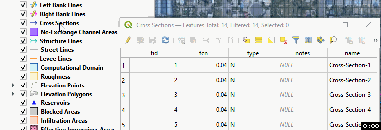
Click Update All.
Name the cross sections.
Click Save button and turn off editor.
Close the table.
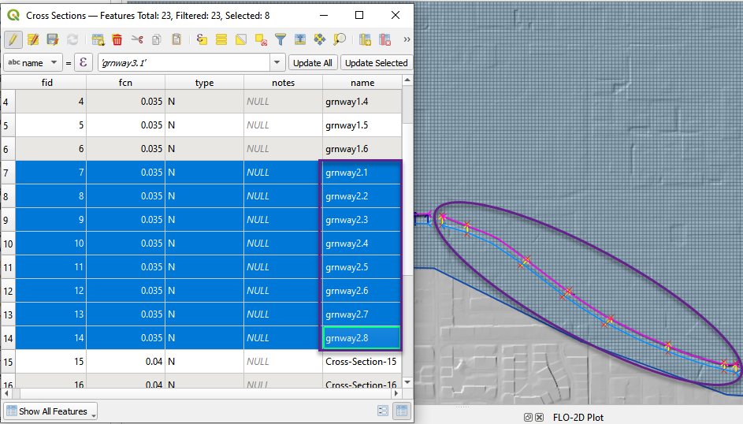
It is OK to group the User Layers into a more organized system. Don’t remove any layers.
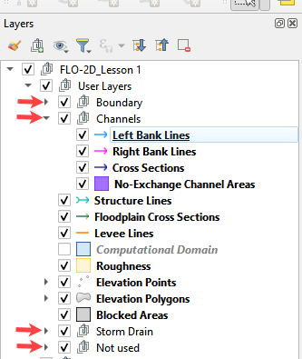
Step 6: Sample station elevation#
Select the first Natural cross section and click the Sample current natural cross section elevation button.
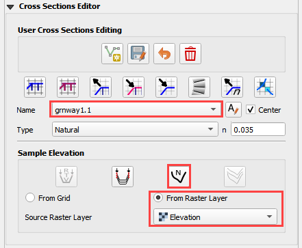
Repeat this step for each Natural Type cross section.
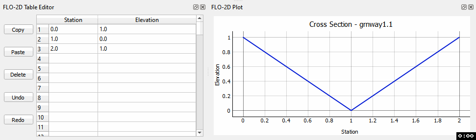
If a cross section is not sampled correctly, the plot will indicate a bad bank alignment. The sample limits are confined by the intersection of the bank line and the cross section line.
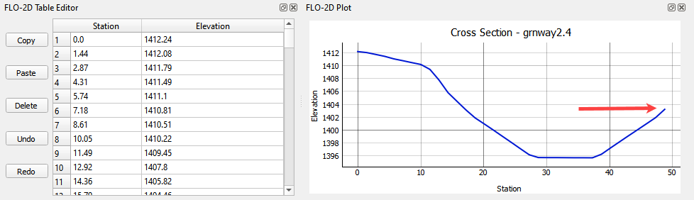
Modify the bank line or cross section line using the node tool to reposition the sample line. Then resample the elevation data.
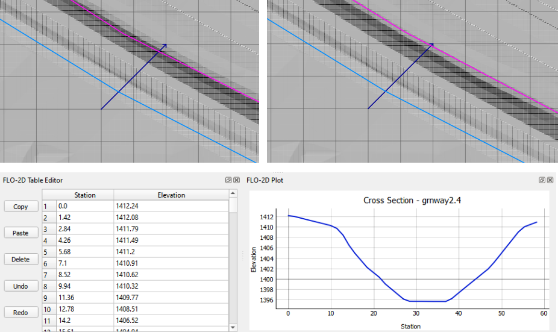
After the final cross section is sampled correctly, save the Left Bank Line, Right Bank Lines, and Cross Sections user layers.
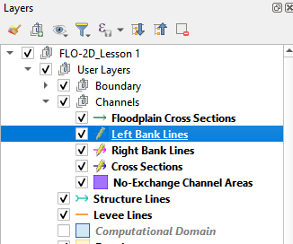
Step 7: Schematize channel#
Warning
The schematize button is a great reset button. If any channel modification is required, click the schematize channel button before making mods.
Click Schematize channels.
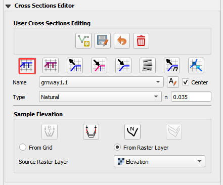
If the channel schematizing process was successful, the following message will appear. Click Close.
Step 8: Revise bank alignment#
Channel alignment in urban projects can be important because channels are usually squeezed between features like buildings, walls, and streets. In this image, the left bank is on the wrong side of an urban wall.
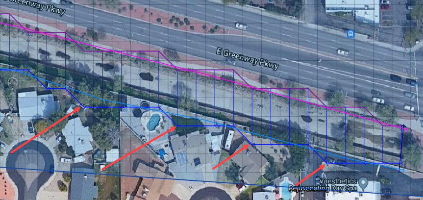
Urban channels also vary widely in their design. This channel is not a rectangular channel or a trapezoidal channel. It has a stepped gabion lining along the banks.
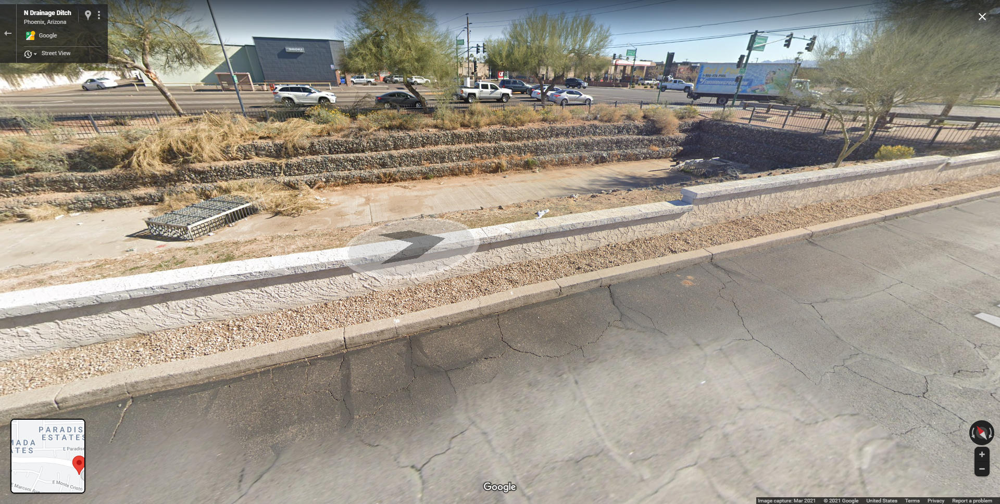
It is simple to make minor corrections to the left bank lines and right bank lines to realign the channels.
In the User Layers group, turn on the Editor Pencil for Left Bank Lines, Right Bank Lines, and Cross Sections.
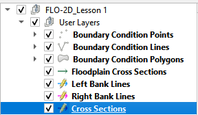
Set the Vertex Tool to All Layers.
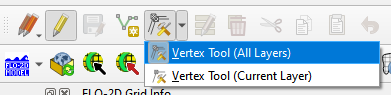
Reposition the Left Bank Line so that it is in between the retaining wall and the channel.
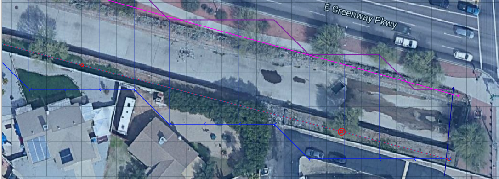
Click the Schematize button to reposition the Schematized Channel and click Yes and Close to close the windows. In This case, hitting the enter button twice will be faster.
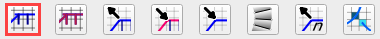
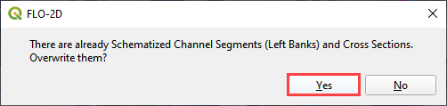
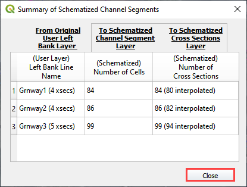
If necessary, uncheck the Center button. This will keep the channel in place, so the corrections are easy to track.
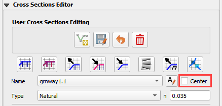
Squeezing the left bank like this means some of the bank elements might be inside the channel.
Slight corrections can be made to Left Bank Line to ensure good bank placement.

The same procedure can be used on the right bank.

Always finish by clicking the schematize button to ensure the final edits were updated.
Once the final edits are complete, save and close the editors for the User Layers.
Step 9: Interpolate cross section data#
N type channels are interpolated using the Interpolator.exe program. This method will outline how to call the interpolator and reload the data.
Warning
If this process needs to be repeated, click the Schematize button before repeating anything beyond this step.
Click the Create CHAN.DAT, XSEC.DAT, AND CHANBANK.DAT button.
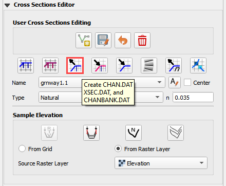
Select the folder where the *.DAT files will be saved.
C:\Users\Public\Documents\FLO-2D PRO Documentation\Example Projects\QGIS Tutorials\QGIS Lesson 2\Lesson 2 Export
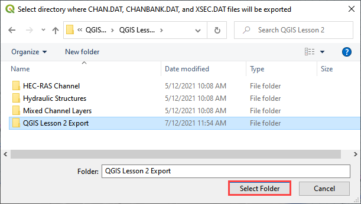
The first action saves the channel data. Click OK to close the message.
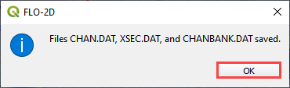
The second action calls the Interpolate.exe program from the FLO-2D Pro folder.
Note
If this process results in an Interpolate.exe error, it is possible to move that file to another location and make sure it is named correctly.
If Interpolate.exe is missing from the FLO-2D Pro folder, get it here:
https://flo-2d.sharefile.com/d-sc217afc44dee42e882a590bc13813db2
Click Interpolate.
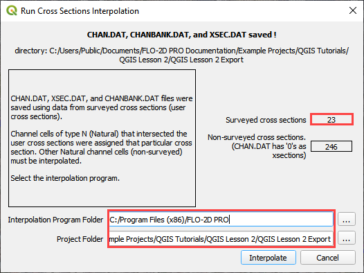
If the interpolation is performed correctly the following message will appear. Click Import CHAN.DAT and XSEC.DAT to update the channel data in QGIS.
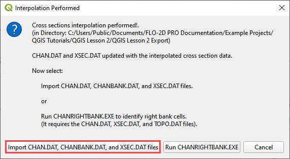
Click the OK icon when the process is finished.
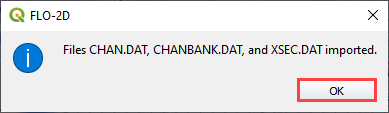
Step 10: Channel boundary condition#
Instructional Video
Inlet#
Zoom to the first channel element on the southeast corner of the map.

Uncheck the visibility of the User Layers Left Bank Lines, Right Bank Lines, Cross Sections.

Collapse the Cross Section Editor
Expand the Boundary Condition Editor.
Click the Add point BC button.

Digitize a point to the first left bank channel cell and click OK.

Click Save on the Widget

Change the BC name of the inflow to GrnwayIN
Set Defined for to Channel
Click Add new Time Series
Name the new Time Series to Grnway 24hr 100yr.
The widget should look like this.

Open the hydrograph file in Notepad and copy the data.

C:\Users\Public\Documents\FLO-2D PRO Documentation\Example Projects\QGIS Tutorials\QGIS Lesson 2\Greenway Inflow 100yr 24hr.txt
Place the cursor in the first cell of the Table and click Paste.

Outlet#
Zoom to the end of the channel.
Add a BC Point to the last element of the channel.


Save the form and set the BC type to Outflow
Name the BC to GrnwayOut
Set the Outflow type to 3.

Click the Schematize button the outflow conditions and click OK to close the message.


Step 11: Culverts#
This structure will calculate discharge through a box culvert. This example has a box culvert that is longer than the grid element. The channel segments are split up to allow for the width of the roadway.
Note
This image shows how the culverts should look once they have been digitized.

Zoom to the first culvert.

Open the Structures Editor. Click the Add Structure icon.
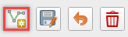
Digitize the first culvert by clicking on the upstream left bank element and downstream left bank element of the channel. Right click to complete the line and click OK to close the Structure Line attribute box.
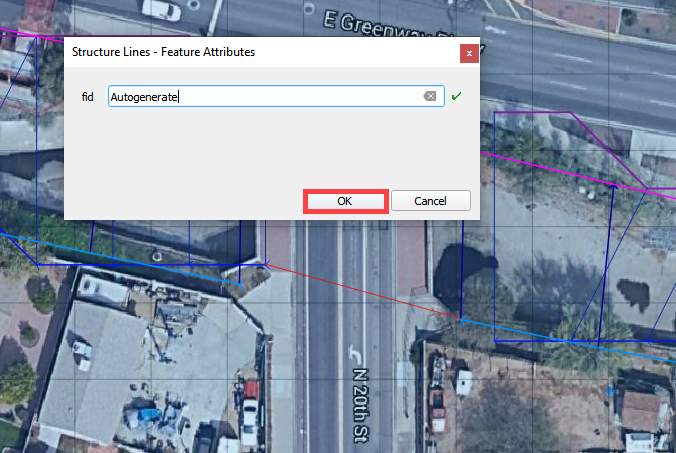
Repeat the process on the second culvert downstream.
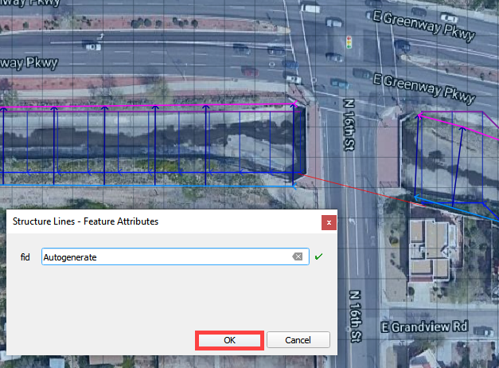
Click the Save Button on the Structure Editor.

Fill out the data for each structure.
Name the culverts Grnway1, Grnway2
Type = Channel
Rating = Rating table
Tailwater condition is none.

Click the Import Rating Tables button

Navigate to the Rating Tables files, select both tables and click Open.
C:\Users\Public\Documents\FLO-2D PRO Documentation\Example Projects\QGIS Tutorials\QGIS Lesson 2\Hydraulic Structures

Note that the data was loaded into the FLO-2D Table Editor for the active structure.

Click Schematize to write the data to the schematic layers.

The hydraulic structures are now ready.
If the table and plot did not update, refresh the tables by selecting the structure again in the widget.

Step 12: Export the project#
Click the Setup Control Parameters icon.

Check the boxes for Main Channel and Hydraulic structures if needed.
Click Save.

Click the Export button for the FLO-2D Data files. Click OK.

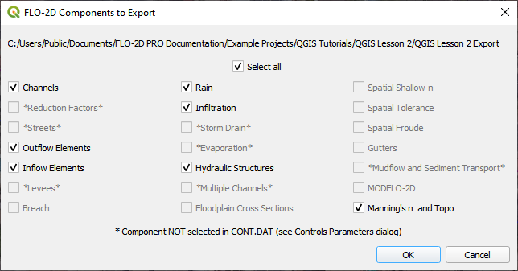
Select the QGIS Lesson 2 Export folder.
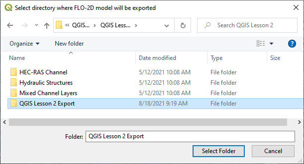
The data is ready to run.
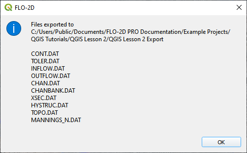
Step 13: Run the simulation#
Click the Run FLO-2D Icon.
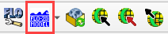
Set the FLO-2D Folder. C:\program files (x86)\flo-2d pro
Set the Project Folder.
C:\users\public\public documents\flo-2d pro documentation\Example Projects\QGIS Tutorials\QGIS Lesson 2\Lesson 2 Export
Click OK.

This is a good point to save project.

Here’s a link to the channel checklist
This final video explains how to review the channel to check if it is running correctly.
Trapezoidal Channel#
Step 5T: Fill trapezoidal cross section attributes#
Open the Cross Sections attribute table from the User Layers Group.
Change the fcn column to 0.035 to set the roughness value.
Change the Type to ‘T’ and apply to all cross sections.
Name the cross sections in groups depending on what channel segment they belong to.
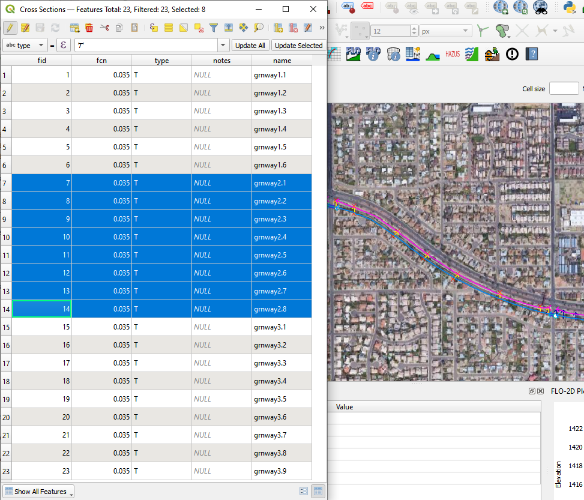
Use the roller wheel on the mouse to scroll down the list of cross sections. This will trigger the geometry table to be filled.
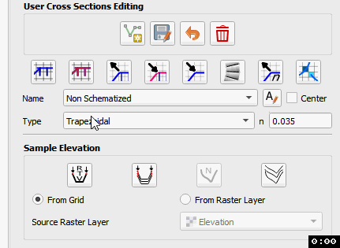
Open the User cross section (user_chan_t) data from the Channels group. Fill the missing data. Bank data will be automatically filled later.
Trapezoidal width = 28 ft
Trapezoidal depth = 10 ft
Trapezoidal side slope = 0.5
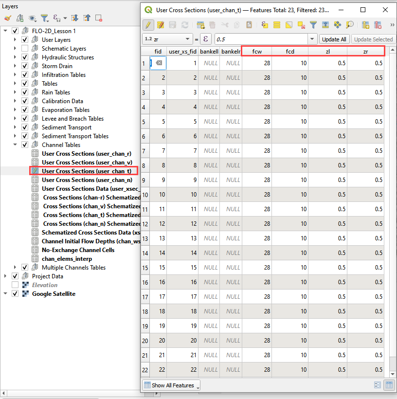
Step 6T. Sample bank elevation (Trapezoidal)#
The trapezoidal channels need bank elevation. Use the Cross Section Editor widget to sample the elevation from the elevation raster.
Set the Source to From Raster Layer: Elevation.
Click Sample bank elevation for all R, T, and V cross sections.
Click Yes to finish the process.
See that the Table and Plot now have full data for the R and T cross sections.
If a cross section bank is not sampled correctly, the plot will indicate a bad bank elevation. The sample limits are confined by the intersection of the bank line and the cross section line.
Modify the bank line or cross section line using the node tool to reposition the sample line. Then resample the bank elevation data.
Step 7T: Revise the transition geometry#
The cross section geometry is not perfectly uniform. It transitions into culverts and toward the end of the channel.
Find the cross sections that need to be adjusted. Measure the geometry and edit the width and side slope.
Repeat this process for any cross section that needs to be edited.
Step 8T: Schematize trapezoidal channel#
Warning
The schematize button is a great reset button. If any channel modification is required, click the schematize channel button before making mods.
Click Schematize channels.
If the channel schematizing process was successful, the following message will appear. Click Close.
Note
If the banks need to be modified, follow Step 8
Step 9T: Interpolate the channel#
There are two different interpolators because there are prismatic (R, T), and natural (N) channel types. This step uses the prismatic channel interpolator.
Click the Interpolate bed elevation data button. This button only works for R, T, and V type channels.
Click OK.
This process will apply a linear interpolation to the trapezoidal type channel data between User Cross Sections.
Return to Step 10 to finish the lesson.